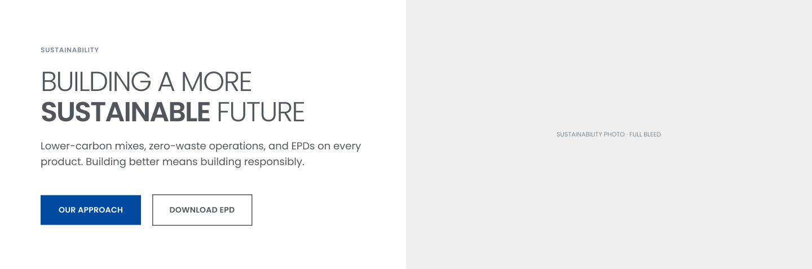

This adds 45 new section components to your Clark Pacific Figma file. It doesn't change anything you've already done. Your pages, your edits and your existing components stay as they are. You'll copy the new ones onto a page of their own, and after that you can use them anywhere.
About 20–30 minutes9 stepsFully undoable (Step 1)
What you're getting
Figma file
Clark Pacific 2.5 Additions
A separate file with the 45 components, already built as Figma components, each with a yellow dev note beside it. You copy from this file; you don't work in it.
Document
Figma 2.5 Dev Notes
For your developers. Explains how every module behaves (accordions, carousels, filters), including the ones already in your file.
❖ 2.5 / CTA Decision Panel / Content left · Blue
❖ 2.5 / CTA Decision Panel / Content left · White

The 2.5 Additions file, page Components · 2.5 Additions: each component (purple outline = it's already a component) with its yellow dev note on the right.
The three rules
Paste onto the new page only, never onto your existing Components page.
Keep each one as its own component. Don't merge it into an existing one.
Don't edit your existing components. If something looks off, send it to Nathan instead.
01
Save a backup version
In your Clark Pacific file, click the file name at the top of the left panel, then File → Save to version history. Title it Before 2.5 and click Save. This is your safety net: if anything goes wrong, Step 9 takes you straight back here.
File
New design file
Duplicate
Save to version history⌥⌘S
Show version history
Export…
Save to version history
Title
Before 2.5
CancelSave
02
Add a new page for them
Still in your file, find the Pages list at the top of the left panel. Click the + and name the new page Components · 2.5 Additions. Everything you paste in the next steps goes here, away from your existing work.
Pages+
00 · Cover
Components
Pages · Desktop
Pages · Mobile
Components · 2.5 Additionsnew
Your page names may differ. That's fine; just add the new one.
03
Copy a component from 2.5
Open the Clark Pacific 2.5 Additions file. Each component has its name printed above it, starting with 2.5 /. Click the component (not the yellow note) so a purple box surrounds the whole thing, then press ⌘ C.
❖ 2.5 / CTA Decision Panel / Content left · Blue
Dev note Copied separately in Step 6.
Tip: selecting. If a click selects just a headline or button inside it, click the name in the Layers panel on the left instead. The top-level layer named "2.5 / …" is the whole component.
Tip: several at once. Hold Shift and click several names in Layers to copy a batch. Batches of about five are easiest to check.
Only copy from Components · 2.5 Additions. The file's other page, Building blocks (from 2.0), holds copies of the buttons, text links and icons these components use. You don't need to copy it.
04
Paste onto the new page
Go back to your file and click Components · 2.5 Additions in the Pages list. Check the page name is highlighted, then click an empty spot on the canvas and press ⌘ V. Stack them top to bottom with some space between; the order doesn't matter.
Before every paste, look at the Pages list. If Components or a Pages page is highlighted, switch to the 2.5 page first.
05
Check it came in as a component
There's nothing to convert: each one is already a component. With the pasted one selected, look at its name in Layers. A purple four-diamond icon means it's ready. If you see a hollow diamond instead, it came in linked to the 2.5 file: right-click → Detach instance (⌥ ⌘ B), then right-click → Create component (⌥ ⌘ K).
READY
❖2.5 / CTA Decision Panel / …
NEEDS A FIX
◇2.5 / CTA Decision Panel / …
Check the name. In Layers it should read exactly like the label above the component in the 2.5 file, starting with 2.5 /. If it doesn't, double-click the name in Layers and type it in. The slashes group your new components into folders in the Assets panel.
Don't group them. Never choose "Create component set" or "Combine as variants"; each one stays its own component.
Styles named "Flagged/2.5". Some colours and type sizes come in with names like Flagged/2.5 · #FFFFFF 72%. They're values from the library that aren't in the 2.0 system yet. Leave them as they are; your developers and Nathan will decide whether to keep or replace them.
06
Bring the dev notes along
Copy the yellow card beside each component and paste it next to that component on the 2.5 page. Leave the notes as plain frames. Don't make them components. They're there so your developers see the behavior next to the design. Eleven components are tagged INTERACTIVE; for those, the note matters most.
07
Use one on a page
Open the desktop page you want to change. In the left panel, click Assets and type 2.5 in the search. Drag the one you want onto the page and drop it on the blue line that appears between two sections.
LayersAssets
2.5
▾ 2.5
▸ CTA Decision Panel 6
▸ Carousel 3
▸ Icon Module 3
▸ Projects 6
Split Content
Stats Row
CTA Banner
↑ Drop on the blue line
About Swap Instance. Right-click → Swap instance works too, but it replaces the section, and text or photo labels you've edited in it won't come along. On sections you've already worked on, drag the new one in beside it, copy your text across, then delete the old one.
08
Do & don't
DO
✓ Paste only onto Components · 2.5 Additions
✓ Check each one shows the ❖ component icon
✓ Keep the "2.5 /" at the start of names
✓ Drag new ones onto pages from Assets
✓ Edit text and photo labels on a page as usual
DON'T
✕ Paste onto your existing Components page
✕ Use "Combine as variants" or "Create component set"
✕ Resize, re-layout or rename existing components
✕ Detach instances on your pages
✕ Turn the yellow notes into components
09
If something goes wrong
For a single slip, press ⌘ Z to undo. For anything bigger: File → Show version history, find Before 2.5, click the ••• beside it and choose Restore this version. Everything goes back to how it was before Step 1. Then message Nathan.
Version history
Current versionAutosave
Before 2.5Kim · today
•••Restore this versionDuplicate
Checklist · all 45
Tick each one once it's on the 2.5 page with the ❖ icon. ● = Interactive: check the dev note came along too.
Content Panels · 3
CTA / Footer image band
Split Content / Products intro
Split Content / Product detail + spec table
Cards & Grids · 8
Cards / Insights feed · Filterable ●
Carousel / Image + content · 3-up ●
Carousel / Image + content · 4-up ●
Carousel / Product highlights ●
Lists / Product category list
Icon Module / 4-col
Icon Module / 3-col
Icon Module / 2-col horizontal
CTAs · 10
CTA Decision Panel / Content left · Blue
CTA Decision Panel / Content left · Dark Charcoal
CTA Decision Panel / Content left · White
CTA Decision Panel / Content right · Light
CTA Decision Panel / Content right · Blue
CTA Decision Panel / Content right · Dark Charcoal
Promo / Tagline statement band
Promo / Content promo band · Podcast
Promo / Content promo band · Webinar
CTA / Asset download block
Data Display · 2
Stats Row / Accent dividers
Project Detail / Spec panel ●
Company Pages · 6
Careers / Open positions list ●
Sustainability / Sustainable callout
Sustainability / Stats band
Sustainability / EPD + credentials grid
About / Timeline · Horizontal
About / Territory map
Insights · 3
Insights / Filter bar ●
Insights / Webinar card · List
Insights / Content archive · Paginated ●
Product Pages · 7
Products / Sub-category card grid
Products / Structural components strip
Products / Product intro · Infinite Facade®
Products / Finish grid · Infinite Facade®
Stats Row / Light · Infinite Facade®
Sustainability / Video + bullet highlights
Sustainability / Initiatives list
Projects · 6
Projects / Filter bar ●
Projects / Project card grid
Projects / Resource card · 4 variants
Projects / Featured blog post
Projects / Detail sidebar trio ●
Projects / Overview accordion · Alt detail ●
For your developers: send them Figma 2.5 Dev Notes. It covers these 45 plus the modules already in your file, including the expandable FAQ list (click a question to open its answer, one open at a time). Questions or anything that looks wrong: message Nathan before changing an existing component.